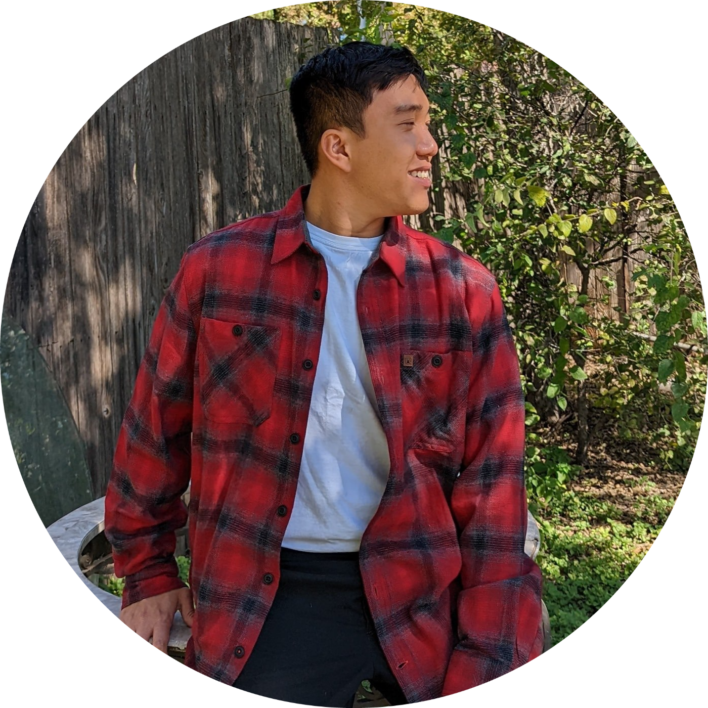

|  |
Thanh Long Le
|
Graduated from Angelo State University and is looking for Entry Level Python Software Develeoper/Engineer jobs
Bachelor of Science in Computer Science Graduate, and have had 4+ years of coding expereience in Python, C++, HTML/CSS, and Javascript.
A fast learner and a quick-adapter, which means that I can fit in to your working environemnt quickly and pick up my work in 3 weeks.
And willing to meet and exceed your epectations, willing to do any work given within any amount of time.
August 2018 - December 2021: Angelo State University, San Angelo, TX
| Dates | Work | Description |
|---|---|---|
| February 2022 - August 2022: | Dell Whole Unit Repair, Houston, Texas |
|
| June 2021 - October 2021: | Internship at National STEM Honor Society, WFH |
|
| June 2019 – December 2021: | Building Manager & Setup Supervisor at Special Events, Angelo State University, San Angelo, Texas |
|
| January 2020 – May 2020: | Computer Science Tutor at Angelo State University, San Angelo, Texas |
|